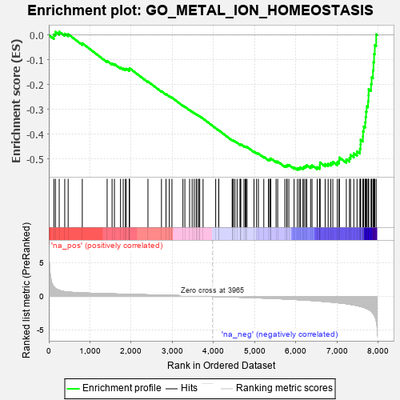
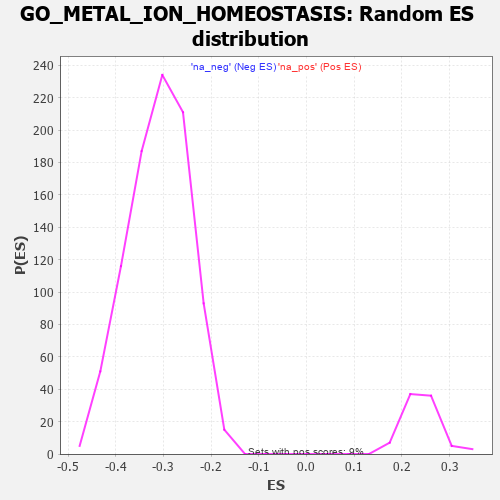

| | | Dataset | 7d |
| Phenotype | NoPhenotypeAvailable |
| Upregulated in class | na_neg |
| GeneSet | GO_METAL_ION_HOMEOSTASIS |
| Enrichment Score (ES) | -0.54315066 |
| Normalized Enrichment Score (NES) | -1.756908 |
| Nominal p-value | 0.0 |
| FDR q-value | 0.0219183 |
| FWER p-Value | 0.701 |
Table: GSEA Results Summary

Fig 1: Enrichment plot: GO_METAL_ION_HOMEOSTASIS
Profile of the Running ES Score & Positions of GeneSet Members on the Rank Ordered List
| PROBE | GENE SYMBOL | GENE_TITLE | RANK IN GENE LIST | RANK METRIC SCORE | RUNNING ES | CORE ENRICHMENT | | 1 | ADCY8 | | | 124 | 1.418 | 0.0024 | No |
| 2 | CSRP3 | | | 161 | 1.186 | 0.0131 | No |
| 3 | THADA | | | 253 | 0.931 | 0.0135 | No |
| 4 | BAX | | | 387 | 0.711 | 0.0057 | No |
| 5 | LRP1 | | | 470 | 0.648 | 0.0036 | No |
| 6 | GLRX3 | | | 813 | 0.529 | -0.0331 | No |
| 7 | P2RY1 | | | 1416 | 0.407 | -0.1044 | No |
| 8 | SCO1 | | | 1536 | 0.385 | -0.1146 | No |
| 9 | CUTC | | | 1593 | 0.375 | -0.1169 | No |
| 10 | JPH1 | | | 1741 | 0.347 | -0.1311 | No |
| 11 | COX19 | | | 1807 | 0.336 | -0.1350 | No |
| 12 | SMAD4 | | | 1860 | 0.326 | -0.1375 | No |
| 13 | NEO1 | | | 1879 | 0.323 | -0.1356 | No |
| 14 | MCUR1 | | | 1953 | 0.313 | -0.1409 | No |
| 15 | MICU1 | | | 1954 | 0.313 | -0.1369 | No |
| 16 | CCR4 | | | 1959 | 0.312 | -0.1334 | No |
| 17 | BTBD9 | | | 2407 | 0.245 | -0.1871 | No |
| 18 | CUL1 | | | 2735 | 0.193 | -0.2261 | No |
| 19 | CAND1 | | | 2845 | 0.177 | -0.2377 | No |
| 20 | ERO1A | | | 2925 | 0.162 | -0.2457 | No |
| 21 | ISCU | | | 2989 | 0.151 | -0.2518 | No |
| 22 | COX11 | | | 3256 | 0.113 | -0.2841 | No |
| 23 | SMAD3 | | | 3303 | 0.105 | -0.2886 | No |
| 24 | KCTD7 | | | 3417 | 0.088 | -0.3019 | No |
| 25 | CDK5 | | | 3480 | 0.080 | -0.3087 | No |
| 26 | ABCB7 | | | 3530 | 0.071 | -0.3141 | No |
| 27 | GPR18 | | | 3578 | 0.063 | -0.3192 | No |
| 28 | CHERP | | | 3587 | 0.062 | -0.3194 | No |
| 29 | RIC3 | | | 3629 | 0.055 | -0.3239 | No |
| 30 | FIS1 | | | 3654 | 0.051 | -0.3263 | No |
| 31 | SKP1 | | | 3663 | 0.049 | -0.3267 | No |
| 32 | HTR1B | | | 3745 | 0.035 | -0.3366 | No |
| 33 | ATG5 | | | 4051 | -0.016 | -0.3752 | No |
| 34 | ABL1 | | | 4125 | -0.027 | -0.3841 | No |
| 35 | PLCE1 | | | 4127 | -0.028 | -0.3839 | No |
| 36 | TMCO1 | | | 4451 | -0.085 | -0.4238 | No |
| 37 | NEDD8 | | | 4465 | -0.087 | -0.4244 | No |
| 38 | JPH3 | | | 4481 | -0.091 | -0.4251 | No |
| 39 | NPTN | | | 4519 | -0.098 | -0.4286 | No |
| 40 | MICU3 | | | 4571 | -0.110 | -0.4336 | No |
| 41 | LETM1 | | | 4644 | -0.127 | -0.4412 | No |
| 42 | NMUR2 | | | 4646 | -0.127 | -0.4396 | No |
| 43 | ITPR1 | | | 4661 | -0.130 | -0.4398 | No |
| 44 | CNNM4 | | | 4738 | -0.147 | -0.4475 | No |
| 45 | PLCG1 | | | 4770 | -0.151 | -0.4495 | No |
| 46 | MYO5A | | | 4787 | -0.155 | -0.4496 | No |
| 47 | P2RX4 | | | 4813 | -0.161 | -0.4507 | No |
| 48 | ACKR4 | | | 4981 | -0.194 | -0.4694 | No |
| 49 | PDPK1 | | | 5043 | -0.207 | -0.4745 | No |
| 50 | DRD2 | | | 5088 | -0.221 | -0.4773 | No |
| 51 | GPR4 | | | 5219 | -0.250 | -0.4906 | No |
| 52 | NPY2R | | | 5331 | -0.281 | -0.5011 | No |
| 53 | ITPR3 | | | 5361 | -0.288 | -0.5011 | No |
| 54 | GRIN1 | | | 5381 | -0.291 | -0.4998 | No |
| 55 | DLG4 | | | 5388 | -0.293 | -0.4968 | No |
| 56 | VDR | | | 5517 | -0.325 | -0.5089 | No |
| 57 | ABCG2 | | | 5556 | -0.335 | -0.5094 | No |
| 58 | CALCR | | | 5730 | -0.386 | -0.5264 | No |
| 59 | CIB2 | | | 5774 | -0.398 | -0.5268 | No |
| 60 | TRPC6 | | | 5784 | -0.401 | -0.5228 | No |
| 61 | ANXA7 | | | 5827 | -0.413 | -0.5228 | No |
| 62 | CXCR5 | | | 5954 | -0.456 | -0.5330 | No |
| 63 | TRPC3 | | | 6035 | -0.483 | -0.5369 | Yes |
| 64 | CALR | | | 6077 | -0.499 | -0.5358 | Yes |
| 65 | ABCB6 | | | 6106 | -0.507 | -0.5328 | Yes |
| 66 | STIM1 | | | 6169 | -0.528 | -0.5339 | Yes |
| 67 | ATP7B | | | 6194 | -0.535 | -0.5301 | Yes |
| 68 | RGN | | | 6233 | -0.547 | -0.5279 | Yes |
| 69 | AP3D1 | | | 6261 | -0.558 | -0.5241 | Yes |
| 70 | GALR2 | | | 6355 | -0.599 | -0.5283 | Yes |
| 71 | TRPM4 | | | 6390 | -0.612 | -0.5247 | Yes |
| 72 | TRPV4 | | | 6515 | -0.668 | -0.5319 | Yes |
| 73 | P2RX5 | | | 6576 | -0.699 | -0.5306 | Yes |
| 74 | CLN3 | | | 6580 | -0.699 | -0.5220 | Yes |
| 75 | ARF1 | | | 6583 | -0.701 | -0.5132 | Yes |
| 76 | EGFR | | | 6708 | -0.765 | -0.5191 | Yes |
| 77 | TRPM8 | | | 6781 | -0.800 | -0.5180 | Yes |
| 78 | PTH1R | | | 6845 | -0.839 | -0.5153 | Yes |
| 79 | HEXB | | | 6894 | -0.864 | -0.5103 | Yes |
| 80 | CCR2 | | | 7003 | -0.939 | -0.5119 | Yes |
| 81 | FBXL5 | | | 7046 | -0.965 | -0.5049 | Yes |
| 82 | GRM5 | | | 7053 | -0.969 | -0.4932 | Yes |
| 83 | CNGB1 | | | 7222 | -1.096 | -0.5005 | Yes |
| 84 | ANK2 | | | 7298 | -1.170 | -0.4950 | Yes |
| 85 | TRPM1 | | | 7324 | -1.197 | -0.4828 | Yes |
| 86 | GRM1 | | | 7404 | -1.272 | -0.4765 | Yes |
| 87 | VAPB | | | 7482 | -1.378 | -0.4686 | Yes |
| 88 | GRIK2 | | | 7552 | -1.471 | -0.4584 | Yes |
| 89 | CALM1 | | | 7567 | -1.499 | -0.4409 | Yes |
| 90 | TRPV6 | | | 7569 | -1.502 | -0.4218 | Yes |
| 91 | TRPA1 | | | 7625 | -1.608 | -0.4081 | Yes |
| 92 | PKD1 | | | 7628 | -1.611 | -0.3877 | Yes |
| 93 | MCU | | | 7644 | -1.637 | -0.3686 | Yes |
| 94 | TRPM2 | | | 7680 | -1.712 | -0.3510 | Yes |
| 95 | ANK3 | | | 7690 | -1.740 | -0.3298 | Yes |
| 96 | RHAG | | | 7701 | -1.769 | -0.3083 | Yes |
| 97 | BOK | | | 7715 | -1.817 | -0.2867 | Yes |
| 98 | P2RY8 | | | 7750 | -1.912 | -0.2664 | Yes |
| 99 | TRPM7 | | | 7761 | -1.936 | -0.2428 | Yes |
| 100 | PDE4D | | | 7764 | -1.944 | -0.2181 | Yes |
| 101 | PKD2 | | | 7822 | -2.167 | -0.1975 | Yes |
| 102 | GRIA1 | | | 7836 | -2.260 | -0.1701 | Yes |
| 103 | CALM3 | | | 7869 | -2.525 | -0.1418 | Yes |
| 104 | FYN | | | 7881 | -2.622 | -0.1095 | Yes |
| 105 | CAV3 | | | 7896 | -2.739 | -0.0761 | Yes |
| 106 | NPSR1 | | | 7913 | -2.947 | -0.0402 | Yes |
| 107 | XIAP | | | 7947 | -3.696 | 0.0031 | Yes |
Table: GSEA details [plain text format]

Fig 2: GO_METAL_ION_HOMEOSTASIS: Random ES distribution
Gene set null distribution of ES for GO_METAL_ION_HOMEOSTASIS